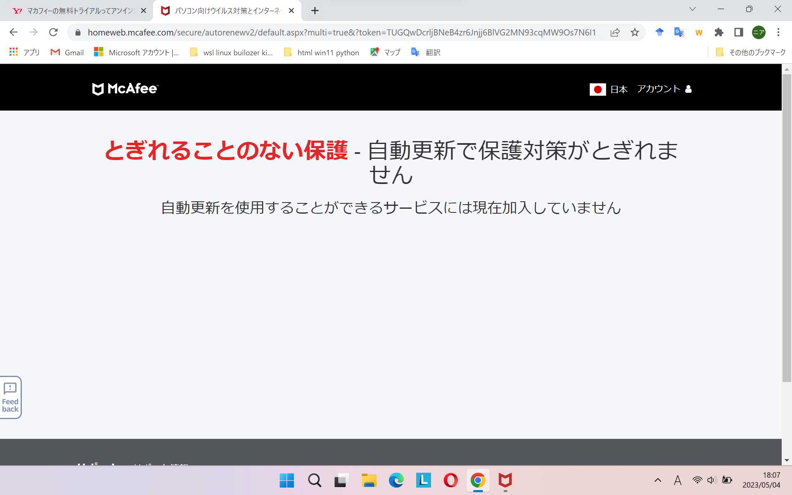

Ideapad Slim5 Gen8 14インチ AMD版(2023年4月発売)の主なスペックは、
Ryen5 7530U(Zen3) メモリ16GB(DDR4-3200) SSD512GB(PCIe3.0) フルハイビジョン(WUXGA) IPS 16:10 NTSC45% ノングレア USBPDあり 19h(JEITA2.0) バックライト付キーボード サイズ312 221 16.9mm 重量1.46kg
価格は、税込78,860円、新製品、新品。
主要じゃないスペックは、microSDカードスロット、HDMI、顔認証（指紋認証はなし）、WiFi6，フルアルミボディ、米軍調達基準MIL-STD-810H
そして、USB3.2 Gen1 (タイプA、Cそれぞれ2つずつ。タイプC一つはACアダプターに接続用)。注意：これは、USB3.2とは別物である。私は、勘違いしたまま購入してしまった。転送速度は、5Gbpsなのである。これは、USB3.0なのである。だまされた。古い知識のままの人は気をつけましょう。
このパソコンを買うまでの経緯
ほかの購入候補は、中古のideapad s540（2019年発売） 59800円でした。それ以外にも、serfice Laptop4 84000円などもありました。また、新品の69800円のideapad s570 という選択肢も・・・・。
以上が、他の購入候補でした。
このパソコンは、ビックカメラのレノボカスタムショップのコーナーで買ったんですが、どうやらそこはネットの実店舗版みたいなところのようでwedの価格で買えるようなのです。商品は輸送です。店頭では受け取れないようなのです。
しかし情報は豊富で、ネット検索のわずらわしさからは解放されます。レノボのサイトを見るよりも楽かもしれません。主要な商品がチラシになっているのでわかりやすいんですね。こんな感じです。
レノボのゴールデンウィークセールで５０００円安くなりました。
裏面
とはいえ、万能でもないんです。情報が間違っていたりして・・・・。最初のチラシでは正しかったのに、後のチラシでは間違っていて・・・。
これと同じ機種で、cpu違いのは、こんな感じでした。価格が１－２万高いです。intelはcpu性能が２０％ほど高いです。flexはタッチパネル、１００％sRGBだけど、グレアです。
裏面
これ以外にも、lightがあったり、intelの型番にｐじゃなくて、Ｈのやつがあったり、OLEDのがあたりともうめちゃくちゃです。１か月ぐらいで全部発売されています。４月上旬に買った人は歯ぎしりせずにはいられないでしょうね。
USB規格について
ところで皆さんはUSBの最新の命名規則をしっかりと把握されていますか？
わたしは、その辺の知識おろそかにしていました。格安ＰＣなのですから別にいいんですが、しかし、わかっていて買うのと、勘違いしていて買うのとではなんというか、だまされた気分になるわけです。
私の中では、このパソコンのUSBは3.2であるという認識で買ったのですが、実際はUSB3.0だったわけです。転送速度が5Gbpsなんです。20Gbpsじゃないんです。
そう、USB3.2 Gen1は、USB3.2とは別物なんです。この命名規則は、2017年ころに作られたらしいのですが、問題は全然統一されていないところにあるんです。2012年ころにも変更があったらしく、その時はUSB3.1 Gen1という名称を作ったようです。
最近購入したUSBメモリーがあるのですが、1年ほど前ですが、その商品の名称が「USB3.1」なのです。Genもついてないのです。「いつの時代のだよ！」と思うわけですが、最近製造された製品なんですね。
この製品は3.1なのですから、10Gbpsなんでしょう、おそらく。3.1 Gen1なら、3.0ですから、5Gbpsですが、Genなんて文字はどこにも見当たらないんですね。
では、まとめ。
その前に、USB2タグというものがあるようですね。何なのか知らないけど。
では、改めて、まとめ
USB2.0
USB3.0 = USB3.1 Gen1 = USB3.2 Gen1 (5Gbps)
USB3.1 = USB3.1 Gen2 = USB3.2 Gen2 (10Gbps)
USB3.2 = USB3.2 Gen2×2 (20Gbps)
USB4というのもあるようですよ、格安ｐｃユーザーには無縁のものですがね。
見てもわかるように、わかればわかりやすいのですが、知らなければ詐欺そのものです。だって、3.2なのに3.0って論理、まともな人なら理解できません。
対策としては、USB-Aに速度を求めるのはやめることです。そうすればAに関しては騙されません。
type-cですが、ここは、USB規格ではなく、thunderbolt3以上に対応しているｐｃの購入を考えましょう。通信速度は40Gbpsですから、騙されようもないですね。安心です。
しかも、外付けでグラフィックスボード接続できるので、GPUの性能が低いｐｃでも可能性が広がりますね、高いらしいけど。
このパソコンが届くまでの期間の話
実質の購入金額を安くしたい。そう思ったわけです。そこで、「あ、パチンコで2万勝とう」と思ったわけです。つまり、s540と同じ出費ですましたかったわけです。
で、スロットをやったわけです。スマスロで万枚をすれば、よくない？そう思ったわけです。もちろん、できるとは思っていません。過去一度として、万枚などしたことないんですから。ですが、ヴァルブレイブ何度か打っているんですが、あ、もちろん5円ですけど、一度も超革命ラッシュまで行けてなかったんですね。
で、その日の目標は超革命ラッシュになって1回以上継続することだったわけです。継続率９０％が一回も継続しないなんて、パチンコで何度となく経験していますから。そういった低い目標を立てていたわけです。そもそもスロットでまともな枚数を得られる時代ではないですから。妥当な目標設定だったんです。麻雀物語4を想像してみてください。500枚がどれだけ難しいことか容易に想像がつくでしょう？
チャンスゾーンまで１000円でいき、成功。決戦ボーナス。失敗。ラッシュならず。プラス1000円でチャンスゾーン、成功。決戦ボーナス、失敗。あまりコインで、再びチャンスゾーン、革命ボーナス。666達成、革命ラッシュ。0回。通常、引き戻しなし。すぐ、チャンスゾーン当選、革命ボーナス、６６６。革命ラッシュ、2回。通常、引き戻し。v点灯で、超革命ラッシュ。これが人生初めての超革命ラッシュです。
目標は超革命ラッシュを一回以上継続すること。継続、どうやら一回は保証のようでした。そうなると、目標は継続率９０％を10回継続にしました。これ、結構難しんですよね、パチンコ経験者ならよくわかるはず。
で、なんだかんだで、特にフリーズ的なこともなく、最大上乗せが100Gを超えることもなく、淡々と47連。人生初の万枚達成です。わずか2，3時間で！純増7.2枚恐ろしい。
引き戻し区間30ゲームくらい打って、やめました。肩がもう上がらなくなっていたので・・・・。スマスロの性質上、肩上げっぱなしになるようで・・・・。8000枚当たりで、右肩上がらなくなりましたよ。万枚達成時の画像がこちら。
5.61円だったので、後で知ったのですが、換金するよ60,000円でした。
三日後、その台のデータを確認すると、「最悪だ」という気分になりました。というのも、どうやら引き戻しがあったみたいで・・・・。つまり、私が引き戻し抽選に当選していて、ほかの人がその恩恵を受けたようです。
最悪なのは、単に引き戻しがあっただけではなく、そのあとさらに4，5000枚出ていて・・・・。いったん間をおいて、またグラフ右上がりになって、コンプリート機能が発動したようです。そして、その台の過去最高記録の日になっていました。
まぁ、もちろん、引き戻しは私のものでしたが、そのまま打ち続けていたからっといって2回目以降はどうなったかは分からないので、一回で終わりってこともあったでしょう。あくまでも、後に打った人の引きが強かっただけなのです。
そう考えても、「くそ、何やってんだ！30ゲームケチって！くそっ！」って思わずにはいられません。ちなみに、その日は2000円だけ打って、100人評議会になって、チャンスゾーン当選して、reg(決戦ボーナス)、1R目で敵の攻撃2連続で終了でした。当然、引き戻しもなしです。
翌日、pc届く。え？予定よりだいぶ早いんですけど。５月１５日前後の予定が、５月３日に届きました。店員の話だと、買った日は４月２７日だったのですが、注文は受け付けているけど５月８日まで配送が止まっているとかで早くとも１０日以降だとの説明だったのですが、間違いだったようです。古いほうのｐｃデータ整理まだだったので、こちらの予定が崩れました。
実際に触れてみて、どうやら新品のレノボpcについてくるマカフィーについて、Ryzen 7040Uシリーズが発表になる。ESCキーの入力時使用。
当初の予定では、到着は5/15前後だったのですが、5/3に到着しました。買ったときは、早くとも5/10と言われていたのですが、というのも5/8のゴールデンウィーク明けに配送になるのでという藩士だったんですが、実際は購入後即配送されていたようです。
実はこれ、入力しているのは新しいpcなんです。とてもいいです。前のpcはthinpad x270なんですが、そのｐｃタイプした時の音が大きくて。「カチャカチャっ」って非常に耳障りだったんですが、このｐｃのキーボードはストロークが浅いらしく音が静かでいいですね。
まぁ、バックスペースキーとエンターキーがつながっているのが気になるところですけど、なれると意外と気にならなそうです。でも、やはりつなげる必要性は全くないので、ideapadの特徴とはいえ、ほんといい加減この配置はやめたほうがいいと思います。
それよりも、個人的に気になるのは矢印キーの近くにaltキーがないことです。戻るがしずらい。このキーボードaltキーが一つしかないんです。壊れたらどうするんだよって思います。
さっき知ったのですが、ESCキーを入力に使うことができるようなんです。変換前の入力をまとめてキャンセルできるんです。バックスペースキーを押しそこなったとき、escキーでぱって消ししまえばいいのでとても楽です。今後は多用することになりそうです。
それでも、まぁ、慣れなのでしょう。いい点もあります。タスクマネジャーの呼び出しキーです。ctrl+shift+Escなのですが、全部左端に揃っているのでわかりやすいです。thinkpad x270はそうではなかったので、他のpcはどうかは知りませんが。
やっぱり新しいｐｃ買うと、初期設定面倒ですようね。最初にすることは、回復ドライブの作成です。1hぐらいでした。thinkpad x270ｔの時は、2ｈぐらいだった気がします。その後にしたこと、ブラウザですね、chromeとかoperaとか。chromeは楽でしたね。アカウントでログインすると、設定が反映されて即前と同じ状態にできました。
MSstoreにはchromeないんですね、android studioもないんですね。bingっていうmicrosoftのブラウザあるんですが、これまでほとんど使ってなかったんですが、これ以外に面白いんです。chatGPT4をベースにしたものらしいんですが、結構使えるんです。openAIのchatGPTとは違うらしいんですけど、「あなたは偽物ですね」って聞いたら、違いますって答えていたので。
JAVA_HOMEの設定しようとしたんですが、やり方思い出さなきゃいけなくて、面倒だなって思ったわけです。そこで、bingのchatGPTに聞いたわけです。そしたら、もう簡単に手順が示されて検索の手間が省けて、ちょっとした感動でした。
画像生成も面白いですよね。「モネ風の絵」って要求したら、しっかりそういう絵が出てきました。面白いですね
厄介なのは、マカフィーです。いつの間にか30日無料体験にっていたんですが、アンインストールが簡単ではないんです。私bingに聞きました。アンインストールの方法。そうすると、設定、アプリ一覧から通常の方法でもアンインストールできるらしいんですけど、完全には削除できない可能性があるらしいのです。正しいアンインストールの方法も教えてくれたので、それをすればいいのですが、それが面倒な方法なので先送りにすることにしました。30日後にアンインストールすることにしました。
また、このｐｃ指紋認証がないのがネックだと思っていたのですが、顔認証、想像以上に使い勝手いいです。指紋に固執していた自分が愚かだったと思います。まぁ、usbの指紋認証リーダーという物もあるので、安いのだと2000円くらいから買えるので、そっちを使うという手もあるんですけどね、顔認証になれるともう買う気にもならないですね。
さて、マカフィーリブセーフですが、ほっておいても大丈夫なようですが、30日後アンインストールしないといけないようです。であれば、早いほうがいいということで、アンインストールの方法を調べした。すると、契約者情報に何も書かれてなければ、そのままアンインストールしてよいようですが、私の場合、なぜか有効となっていたのです。クレジットカード情報とかはないので問題ないんですが、メールアドレスがアカウント名になっているので仕方がないので、パスワードを設定して確認することにしました。
自動更新が無効になっていることを確認できれば、いいわけです。で、以下こんな感じ。

というわけで、そもそも自動更新は勝手に３０日体験版なっている人は可能じゃなかったようです。安心して、アンインストールしました。普通に設定から。
このｐｃ出来になるのは、バックスペースキーの大きさだけではないんです。バックライトキーボードの明るさ、これ、明るすぎるんです。ちょっと暗くなってきたから、ライトをつけるとまぶしくて・・・・。結局オフにする。光の強さ、強と弱があるんですが、弱が明るすぎてどうしようもないんです。１/４ぐらいの明るさがちょうど良いんですけどね。ＬＥＤ多すぎ、無駄なんですね。ここは是非ケチってほしいところです。
キーボードがぼやーって浮かび上がるくらいの明るさが欲しいんですが、できないんです。いっそライトではなく、蛍光塗料のほうがいいかもしれませんね。暗くなったら光るやつ。それか、下からじゃなく普通に小さなＬＥＤライトひとつで照らす方式のほうがいいかもですね。そっちのほうが眩しくないかもしれません。キーボードの人のほうからモニター方向に照らせば眩しくなくて、建物をライトアップするように間接照明的な感じで、しかもLED2,3個で済むので電力消費も少なくて済むでしょうから。
ところで、5/8ごろの話なんですが、AMDがRyzen 7040Uシリーズを発表したようです。これはモバイル向けで、40なのでプロセスルールZen4なんです。ほんとの意味での7000シリーズですね。おそらく数か月後には、このCPUを搭載したPCが出るでしょう。ほぼ同じ値段で、Ideapad silm5 gen8のCPU違いの製品として・・・・。仕方がない、もう買ってしまったのだから、忘れることにします。
総括:IPS液晶とTN液晶の見比べ。バックライトキーボードと筐体の色の関係。pc初期化とTPM2.0のクリア。
今まで使っていたのは、thinkpad x270 HD TN液晶 12.5インチでした。メモリ8G/ssd256でした。cpuはwin11のスペック基準を満たしていないcorei5-7200uでした。それをマイクロソフト公表の非推奨法によりwin11にしていました。versionは22H2でした。
TN液晶は見ずらいので非常に疲れます。さらにHDなのでなんとなく文字がぼやけた感じで見ずらいです。さらに１２．５インチなので画面も小さく疲れます。が、新しいのと比べてみたのですが、見る角度によっては遜色ないようにも思えるんです。
真横から見たときは、上下角度が０℃なら大差なくとしっかり見えます。問題は上下方向です。ここが違いますが、それも明るさMAXで見ると意外とって感じです。とはいっても、確実にみずらくなってはいるんですが、普段明るさを最大にするっていう発想はなかったので、驚きです。とはいえ、それは数分ならばの話。１ｈ光量最大はきついです。目が疲れます。

thinkpad、TN液晶のほうは、全体的に青っぽく見えます。ここまでが明るさ最大での比較です。
上記二つは、明るさを半分くらいにしたものです。thikpadの方がなぜか明るいです。ディスプレイのそもそもの明るさが違うのかもしれません。ideapadの方も見ずらくなりました。明るさは7割くらいで使うのがよさそうです。
新しいｐｃを買ったので、旧ｐｃは売却するわけですが、初期化しなければなりません。初期化の途中で、TPM2.0をクリアするか？と聞かれます。いまいちわからなかったが、するを選択しました。で、特に問題なく初期化できました。
問題は、ここから。どこまででやめるか。言語選択で日本語、のところでやめるという人もいるようですが、それだと売却時の査定で余計な時間がかかるのではないか？私はそう思ったわけです。それに充電状態をどうするかの問題もあります。現在何パーセントなのかわからないのです。なので、ホーム画面まで行くことにしました。
さて、そうするとマイクロソフトアカウントでログインしなければならないのですが、初期化のためだけに新たに作るわけにもいかず、既存のアカウントを使いました。これは間違いだったかなと後で後悔しましたが、やはりこれが無難な方法だったと今では思います。
なんだかんだで起動して、次は設定からアカウントを削除することです。削除しようとすると、ディバイスの暗号化がどうこう、カイフクキーを書き留めろとか、なんだか面倒なので、私はディバイスの暗号化を解除してから、ローカルのログインに変更しました。暗号化を解除した後なので、回復キーの問題もないので簡単でした。
だが、ローカルに切り替えているのにマイクロソフトアカウントでログインした時の、状態が残ったままになっていてそれを消すのに苦労しました。onedriveをアンインストールしたりといろいろしました。
ほとんどはきっと削除できたのですが、一か所。PC、C、ユーザー、この後のディレクトリ名がアカウントに関連したものになっていて、それは変更できないのです。この部分はあきらめました。
最後にlenovo vantageをインストールして、閾値を80％にして終了です。thinkpad x270はバッテリーが二つあるので、両方を80％以下にしたいのですが大変なのであきらめました。プライマリー（内臓）バッテリの方は、85％ぐらいのままです。このパソコン、セカンダリバッテリーを5％まで使い切ってからじゃないと、プライマリーにいかなので20－80％でバッテリー運用考えている人には厄介なパソコンなのです。セカンダリの方は取り外しができるので、外せば内臓バッテリーの方を使えるのですが、まぁ、面倒なので。
コマンドプロントでpowercfg/batteryreportでバッテリーの状態を確認して、
WiFi情報削除して、売却準備は完了です。売る直前に再度充電する予定です。何％までするかは未定です。100％なのか90％なのか、どっちが良いのか。
補足：気づいたんですが、バックライトキーボードが必要なのは、黒いパソコンを使っている人のようです。このideapadはどちらかといえば多少明るめのグレーで画面の光が反射してキーボードの文字が見えるんです。thinkpadの時は、周りが暗くなるとキーボード面真っ黒で何も見えませんでしたから、何が何でもキーバックライトと思っていましたが、色次第で、キーバックライト必須項目ではないようです。
訂正、バックライトなくても見えるみたいなこと言いましたが、頑張ってキーを探せば見えるの間違いでした。数字は探して入力できそうですが、ctrl Fnあたりは、タッチパット付近はほぼ見えません。
バックライトつけると、はっきり見えますし、画面の方が明るいのでキーボードが明るすぎてって感覚にはなりません。キーバックライトはないよりは断然あった方がいいです。
すっかり忘れていましたが、thinkpad x270はタイプCに充電機能があるらしいのです。USBPDとは違うようなのですが、充電できるらしいのです。で、売る前に試してみようと思い充電してみたんですが、認識されませんでした。必要なW数に達していないので当然なんですが。私が使ったのはスマホン使っているACで、5V ｘ 2.4A =12Wので全然足りないのです。
ideapad slime5 gen8は６５ＷのACアダプターなので、接続部はタイプCなのでこれを使えばできると思うのですが、壊れたら嫌なのでチャレンジはしないことにしました。
ハードオフに売りに行きました。10,000円でした。まぁ、妥当な額でしょう。というのも、中古でthinkpad x270 core3のですが、winがproエディションの商品が22000円くらいで売っていたので、私のはHOMEエディションでcore5ですが。
pcが到着してからの話、ほぼ余談。
さて、あと二万という気分になるのですが、深追いは禁物です。1000円2円パチンコを打ちました。だめでした。別の日、一円パチンコ打ちました。800円で当たり、7000発。万枚後の負け分を差し引いて、実質、3000円の勝ちです。
pcを処分した後あと一万ということで、ヴァルブレイブを打ちに行きました。本当は、ゴブリンスレイヤーを打ちたかったのですが、5.6円にはまだありませんでした。3000円で、100人評議会、革命ボーナス、まりえ覚醒、ｖ1回目に革命分岐、ｖ揃うも100Ｇのみ。2個点灯で終了、引き戻し、超革命ラッシュ。12回で終わり、引き戻しなし。計2700枚。
12,000円の勝ちでした。やはり純増7.2枚はいいですね。一時間くらいでこの枚数ですから。終了画面がこちら。
後で気づいたのですが、これが黒背景だったようです。前のやつが、青背景だったんですね。もしかしたら、高設定だったのかもしれません。打ってるときは、そんな感覚なかったのですけどね。